Safe Route Cycling Assistant
Predicting bicycle collision risk to recommend safer routes for cyclists — identifying unsafe paths and suggesting lower-risk alternatives.
The Problem Our Team Addressed
Safeguarding cyclists through intelligence, data modeling, and proactive route planning.
The Challenge
Our team addressed the challenge of safe route planning for bicyclists, specifically identifying unsafe routes and dangerous paths to suggest safer alternatives.
Traditional map services optimize almost exclusively for minimal travel distance or time, frequently routing cyclists onto high-speed arterials, narrow corridors, and collision hotspots.
Why The Problem Matters
Cyclists are significantly more vulnerable to road accidents than drivers, making safety assessments critical for informed decision-making.
Furthermore, this research helps cities identify high-risk areas and promotes healthier, sustainable transportation habits across communities.
Our Core Research Question
"What are the most common contributors to unsafe routes? Can we identify which paths are likely to be dangerous — in order to suggest safe(r) ones to a user?"
The Dataset(s) We Used
Synthesizing geospatial road network topologies with a decade of historical crash records.
We utilized OpenStreetMap (OSM) road segments for Santa Clara County and SWITRS bicycle crash data from 2014–2023.
The team assigned each crash to its nearest road segment using a spatial nearest-neighbor match, resulting in a labeled dataset of 109,862 road segments — with one row per road segment plus collision label.
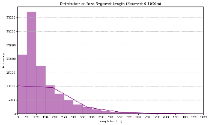
Spatial Matching
Road segment topology and crash location mapping.
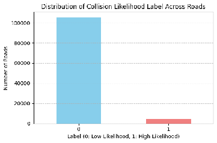
SWITRS Crash Distribution
Historical incident clustering and density across the county.
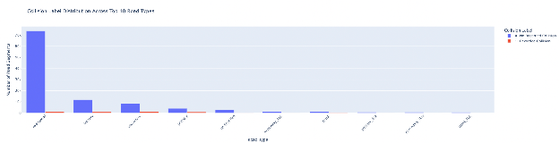
Dataset Schema
109,862 road segments with collision labels and feature attributes.
The Machine Learning Model(s) We Explored
Rigorous evaluation of supervised classification architectures and optimization techniques.
The team explored several supervised learning methods to predict crash probability on individual road segments:
Decision Tree
Baseline interpretable model mapping hierarchical feature decision boundaries.
Random Forest
Tuned to minimize false negatives so suggested routes remain reliable and trustworthy.
XGBoost
Gradient boosted decision trees evaluated on PR-AUC across imbalanced features.
Logistic Regression
Calibrated probabilistic baseline for direct continuous collision likelihood assessment.
Techniques Explored to Boost Performance
We experimented extensively with advanced preprocessing, tuning, and re-sampling pipelines:
Key Findings and Visualizations
Critical observations regarding dataset class imbalance and the trade-offs of safety optimization.
Severe Class Imbalance
Approximately 4% (4,310) of the road segments contained a collision, meaning our dataset was severely imbalanced.
We tried balancing the dataset with synthetic data (SMOTE and SMOTE-NC), which did not improve our models’ predictions compared to using the raw data.
The Safety Trade-off
Model optimization favored F1-scores, but false negatives remained a persistent challenge.
We agreed we would have to live with some false negatives; otherwise, our model would have no “safe” routes to suggest.
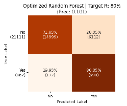
Class Imbalance & Evaluation
Visualizing the 4% crash distribution and precision/recall trade-offs.
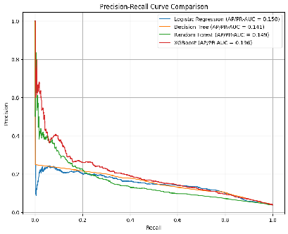
Feature Importance & Comparisons
Key predictive drivers influencing road segment safety classifications.
Application
Translating predictive risk intelligence into an interactive routing assistant for cyclists.
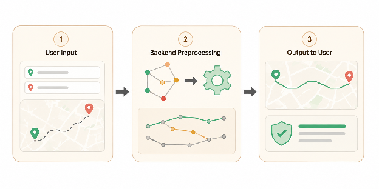
Safe Route Assistant Interface
End-to-end interactive map computing low-risk paths compared to standard routes.
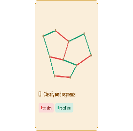
Route Risk Assessment
Comparative scoring of baseline vs. safer route alternatives.
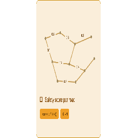
Hazard Avoidance
Dynamic detours around historical and predicted collision corridors.
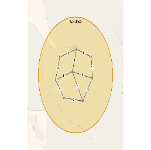
Safety Advisory Metrics
Confidence metrics and continuous safety indices.
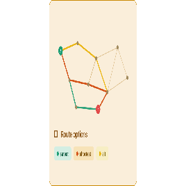
Turn-by-Turn Safety Guidance
Granular instructions highlighting high-visibility, lower-risk segments.
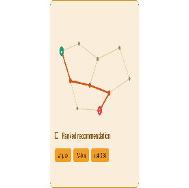
Multi-Route Comparison
Trade-off analysis between travel time and safety improvements.
Limitations & Future Work
Critical evaluation of operational constraints and technical roadmap for future iterations.
Limitations
The model estimates risk based on historical data and does not account for live traffic or real-time road conditions.
The model is not perfectly reliable, creating a trade-off where increasing safety sensitivity can lead to user uncertainty.
Also, since it was trained specifically on Santa Clara County data, the model cannot reliably generalize to other parts of the US or the world without localized retraining.
Future Work
Ongoing and future engineering efforts include:
- ✓ Precision & Recall Enhancements: Refining loss functions and feature spaces to minimize false negative hazard predictions.
- ✓ User Preference Dial: Enabling configurable sliders for user-defined safety versus total route length trade-offs.
- ✓ App Ecosystem Integration: Integrating the scoring engine with standard turn-by-turn navigation platforms.
Ethical Considerations (Biases)
Understanding systemic data biases and their implications on machine learning predictions.
Geographic Bias
Most fatal bicyclist crashes occur in urban areas, where more people are riding bicycles. Since our model is trained on collision data, it may learn to associate higher collision risks with urban roads.
Because urban areas tend to have more cyclists, they also tend to have higher reported collisions which may lead to the model avoiding urban routes even though they are commonly and successfully used among cyclists.
Data Availability Bias
Some neighborhoods may have incomplete data or underreported collision data.
These areas with less data may make roads appear safer than they actually are, which may lead to inaccurate risk predictions and false senses of security.
Seasonal Bias
Since far more people bike during warm, sunny months, the majority of our accident data will naturally come from the summer.
The model might look at a rainy or winter day and incorrectly assume a road is "safe" simply because very few crashes were historically recorded during those months.
The Impact of Our Project
This project promotes safer cycling by providing data-driven, lower-risk route recommendations and empowers cyclists and city planners with actionable insights.
Additionally, it creates a scalable foundation for similar deployments in other cities using existing open road network structures and public collision records.